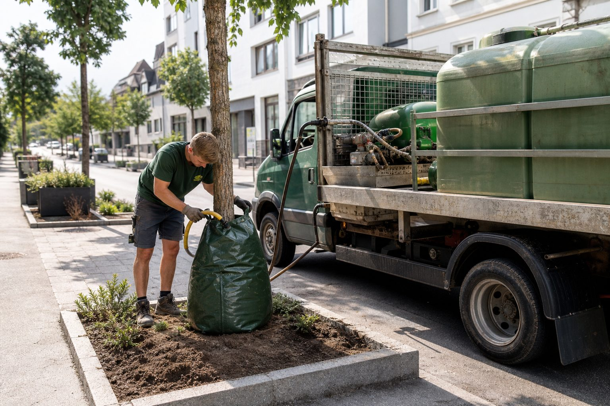

Anwachsen sichern: Wie junge Bäume den ersten Sommer überstehen
Die Pflanzung ist abgenommen, der Sommer kommt, und der Betrieb haftet für das Anwachsen. Was Fertigstellungs- und Entwicklungspflege verlangen, wie viel Wasser ein Jungbaum wirklich braucht und warum der Gießrand wichtiger ist als der Schlauch.

Ein Baum, der im Herbst gepflanzt wurde, hat im ersten Sommer keine Wurzeln außerhalb des Ballens, die ihn versorgen könnten. Er lebt von dem Wasser, das im Ballen ist – und das ist im Juni nach zehn Tagen ohne Regen aufgebraucht. Ab da entscheidet der Betrieb, nicht das Wetter, ob der Baum den Sommer überlebt. Und er entscheidet es nicht freiwillig: Bis zur Abnahme schuldet er das Anwachsen, danach greift die Gewährleistung.
Fertigstellungs- und Entwicklungspflege
Die DIN 18916 beschreibt die Fertigstellungspflege: Sie beginnt mit der Pflanzung und endet mit der Abnahme, und sie umfasst alles, was das Anwachsen sichert – Wässern, Nachsetzen, Pfähle prüfen, Bindungen lockern, Wildkraut entfernen. Die Abnahme setzt voraus, dass die Pflanzen angewachsen sind; im Vertrag wird dafür meist ein Zeitraum von einer Vegetationsperiode vereinbart. Die Entwicklungspflege nach DIN 18919 schließt daran an und ist eine eigene Leistung: Sie führt die Pflanzung über zwei bis drei Jahre in den Zustand, in dem sie sich selbst versorgt. Ob der Betrieb sie übernimmt oder der Auftraggeber, steht im Leistungsverzeichnis. Wer sie nicht übernimmt, sollte es dokumentieren – sonst haftet er für Schäden, die aus fehlender Pflege des Kunden entstehen.
Wie viel Wasser
Die verbreitetste Fehlannahme ist, dass häufiges Gießen gut ist. Zehn Liter am Tag benetzen die obersten Zentimeter, verdunsten bis zum Abend und erziehen die Wurzeln dazu, oben zu bleiben. In der Praxis hat sich für Jungbäume mit Ballen bewährt: seltene, große Gaben – in Trockenphasen wöchentlich in der Größenordnung von 50 bis 100 Litern je Baum, abhängig von Größe, Standort und Boden –, die langsam einsickern und bis in den Ballen reichen. Ein Gießrand aus Erde um den Ballen hält das Wasser dort, wo es hin soll; ohne ihn läuft die Hälfte in den Rasen. Bewässerungssäcke mit 60 bis 100 Litern Fassungsvermögen geben das Wasser über Stunden ab und lassen sich in einer Tour befüllen. Mulch aus Rindenhäcksel oder Holzhackschnitzeln reduziert die Verdunstung und hält den Freischneider vom Stamm fern.
Die Tour organisieren
Ein Betrieb mit 200 Jungbäumen in der Pflege braucht in einer Trockenphase einen Wasserwagen mit 1.000 bis 2.000 Litern und eine Person für zwei bis drei Tage pro Woche. Das ist eine Position im Angebot, keine Nebentätigkeit des Vorarbeiters am Feierabend. Betriebe, die die Entwicklungspflege übernehmen, kalkulieren die Bewässerungstouren nach Anzahl und Standort der Bäume – und sie legen im Vertrag fest, wer das Wasser stellt. Bei kommunalen Aufträgen ist die Entnahme aus Hydranten genehmigungspflichtig; Wasserentnahmeverbote in Trockensommern gelten für Gewässer, nicht für das Netz, können aber die Nutzung von Brunnen einschränken.
Gewährleistung
Die Verjährungsfrist für Mängelansprüche beträgt bei Bauwerken fünf Jahre nach BGB und vier Jahre nach VOB/B – für Pflanzungen wird in Verträgen häufig eine kürzere Frist vereinbart, oft zwei Jahre. Innerhalb dieser Frist muss der Betrieb abgestorbene Pflanzen ersetzen, wenn der Ausfall auf seine Leistung zurückgeht – auf Pflanzenqualität, Pflanzung oder Fertigstellungspflege. Ausfälle durch unterlassene Pflege des Auftraggebers gehen nicht zu seinen Lasten. Der Nachweis dafür ist die Dokumentation der Übergabe: Was wurde übergeben, in welchem Zustand, mit welchen Pflegehinweisen. Ein Pflegeprotokoll mit Foto ist die günstigste Versicherung, die die Branche kennt.
Kommentare
Noch keine Kommentare. Schreiben Sie den ersten.
Mehr aus Bauen & Pflanzen
Zum Ressort
Über 80 Landkreise verbieten die Wasserentnahme – was das für Pflanzungen und Pflege bedeutet
Der Sommer 2026 hat Böden und Flüsse ausgetrocknet. Landkreise von Baden-Württemberg bis Brandenburg untersagen die Entnahme aus Bächen und Flüssen, teils bis Oktober. Für GaLaBau-Betriebe wird Bewässerung damit zur Planungs- und Haftungsfrage.

Zukunftsbäume: Welche Arten Hitze, Trockenheit und Frost aushalten
Die GALK-Straßenbaumliste führt 178 geeignete Straßenbaumsorten, die Broschüre von BdB und GALK filtert daraus 65 Zukunftsbäume. Für Betriebe, die Bäume pflanzen und für ihr Anwachsen haften, ist die Auswahl eine Frage des Geldes.

Schwammstadt: Vom Fachbegriff zum Auftrag
Regenwasser speichern statt ableiten – das Prinzip ist alt, die Nachfrage neu. Kommunen planen Regengärten, Baumrigolen und Versickerungsmulden, Landesgartenschauen zeigen sie, Förderprogramme bezahlen sie. Was GaLaBau-Betriebe wissen müssen.